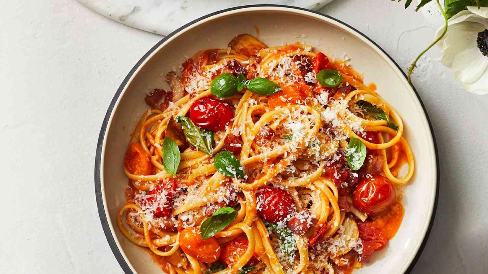

Linguine With Cherry Tomato Sauce

Every cook needs a great pasta sauce in their back pocket, and this cherry tomato version is worthy of the honor.
You'll start the sauce by rendering cubes of salty pancetta, so the fat infuses every bite of the sauce. To this, you'll add thinly sliced garlic and the cherry tomatoes, which burst and sizzle in the pan. Mashing just a few of these is what allows the sauce to stick together while keeping some tomatoes for juicy explosions as you eat.
Linguine is a good choice for its thicker width than spaghetti, and a generous shower of parmesan and basil adds instant depth of flavor.
Ingredients
- 1 pound linguine
- 4 ounces diced pancetta
- 2 tablespoons olive oil
- 3 cloves garlic, thinly sliced
- 2 pints multicolored cherry tomatoes
- 1 teaspoon kosher salt, plus more for water
- ¼ cup grated Parmesan cheese, plus more for serving
- 1 cup loosely packed basil leaves, plus more for serving (from 1 bunch)
Steps
- Bring a large pot of generously salted water to a boil. Cook pasta according to package directions, reserving ½ cup of pasta water. Drain the pasta and return it to pot.
- Heat a large skillet over medium. Add pancetta; cook, stirring occasionally until the fat has rendered and pancetta is crispy 8 to 9 minutes.
- Add oil and garlic to skillet; cook over medium, stirring occasionally, until softened slightly and fragrant, about 1 minute. Add tomatoes and salt; increase heat to medium-high and cook, stirring often, until some tomatoes have burst and tomato skins soften about 4 minutes. Reduce heat to low. Using a wooden spoon, lightly break and mash about a third of the tomatoes to release their juices further.
- Add tomato mixture, cheese, and ¼ cup reserved pasta water to the pot with pasta. Cook over medium-low, stirring constantly, until sauce clings to noodles, 1 to 2 minutes, adding more pasta water if needed. Remove from heat. Add basil and stir to combine. Serve with more basil and cheese.
source
Home